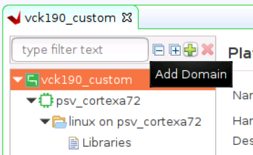
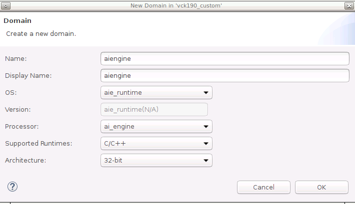
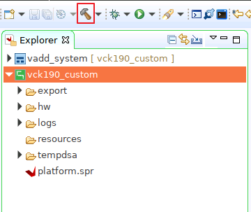
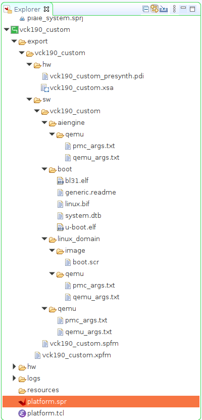

Versal Custom Platform Creation Tutorial |
Step 3: Create the Vitis Platform¶
Vitis Platform can be created with Vitis GUI or XSCT command line. This tutorial will focus on GUI flow.
Prepare for Platform Packaging¶
We would store all the necessary files in one directory for Vitis platform creation flow.
Required platform creation source files
| Component | Conventional Path or Filename | Description |
|---|---|---|
| Boot components in BOOT.BIN | boot/bl31.elfboot/u-boot.elfboot/system.dtb | All components referred in linux.bif should be in this folder |
| Boot components in FAT32 partition of SD Card | image/boot.scr | U-boot configuration file |
Optional platform creation source files
| Component | Conventional Path or Filename | Description |
|---|---|---|
| BOOT Image Description file (BIF) | boot/linux.bif | BIF describes the layout of BOOT.BIN. Vitis can generate a default BIF for general purpose usage. <br>User can provide customized BIF when needed. |
| Linux Software Components | sw_comp/Imagesw_comp/rootfs.ext4sw_comp/sysroots | Linux components for application creation and Linux booting. They can be packaged into platform or stay standalone and be linked during application creation process. |
Linux software components can be reused in most cases when platform hardware design changes. So we will not package them into the platform. Here we prepare them for application creation in the next step.
We would store all the necessary files for Vitis platform creation flow. Here we call it step3_pfm directory. Example files can be found in ref_files/step3_pfm directory of this repository.
Prepare the boot components and store them in the same directory. They are generated by PetaLinux and originally located in <your_petalinux_dir>/images/linux directory. You can copy them into step3_pfm/boot for easy understanding. Here we keep them in <your_petalinux_dir>/images/linux directory because in case we need to update PetaLinux settings and rebuilt PetaLinux, we just need to clean platform and rebuilt them in Vitis to generate a new platform. We won’t need to copy them manually every time. These files are the source of creating final BOOT.BIN during application packaging. When creating the platform, these files will be copied to the platform output directory.
bl31.elf
u-boot.elf
system.dtb
Prepare step3_pfm/sd_dir directory. Contents in this directory will be packaged to FAT32 partition of SD card image by v++ package tool.
Copy boot.scr from <your_petalinux_dir>/images/linux directory to the step3_pfm/sd_dir directory. It’s a script for u-boot initialization. U-boot will read it from fat32 partition during boot process.
Prepare Linux software components for application creation. Platform packaging can add them or exclude them. Due to the software component size, they are usually kept outside of platforms so that these components can be reused among multiple platforms with the same architecture. On the other side, keeping Linux software components in the platform can prevent mix and match different combinations when delivering the platform from one team to another. Here we keep the Linux software components standalone.
# Create sw_comp directory cd step3_pfm mkdir sw_comp cd sw_comp # Copy Linux kernel image cp <your_petalinux_dir>/images/linux/Image . # Copy EXT4 Root Filesystem cp <your_petalinux_dir>/images/linux/rootfs.ext4 . # Install sysroot to this directory <your_petalinux_dir>/images/linux/sdk.sh -d ./ -y
Finally, your prepared directory structure looks like this.
tree -L 3 --charset ascii
.
|-- boot
| |-- bl31.elf
| |-- system.dtb
| `-- u-boot.elf
|-- sd_dir
| `-- boot.scr
|-- sw_comp
| |-- environment-setup-cortexa72-cortexa53-xilinx-linux
| |-- Image
| |-- rootfs.ext4
| |-- site-config-cortexa72-cortexa53-xilinx-linux
| |-- sysroots
| | |-- cortexa72-cortexa53-xilinx-linux
| | `-- x86_64-petalinux-linux
| `-- version-cortexa72-cortexa53-xilinx-linux
Note: If you run the fast track script, the boot directory only has linux.bif file because the platform creation script xsct_create_pfm.tcl uses <petalinux_project>/images/linux directory as boot directory for components of the BIF file. To make the GUI flow easier, we copy these components to boot directory for preparation.
Platform Packaging¶
First we create a Vitis platform project with the XSA file generated by Vivado
Launch Vitis.
# You are still in step3_pfm directory # Setup Vitis environment source <Vitis_Install_Directory>/settings64.sh # Launch Vitis, using ./platform_repo directory as workspace vitis -workspace ./platform_repo &
Create a platform project
In the Vitis IDE, select File > New > Platform Project to create a platform project.
Enter the project name. For this example, type
vck190_custom, click Next.In the Platform page, click Browse button, select the XSA file generated by the Vivado. In this case, it is located in
<Your Vivado Project Directory>/vck190_custom.xsa. Click Next.Set the operating system to linux.
Set the processor to psv_cortexa72.
Click Finish.

Setup Linux domain settings in Platform Settings view.
Click the linux on psv_cortexa72 domain
Update the Display Name to
xrtby clicking the edit button on the right of this line and input the name. We’d like to indicate this is a Linux domain has XRT installed and is capable of running acceleration applications.Set Bif file: Click the drop down button and select Generate BIF. The generated BIF file is generated bin resource directory.
Boot Components Directory: Browse to step3_pfm/boot/ and click OK. Bootgen will look for boot components referred by BIF in this directory to generate BOOT.BIN
FAT32 Partition Directory: Browse to step3_pfm/sd_dir and click OK. Files in this directory will be copied to FAT32 partition of SD card.
Note: FAT32 Partition Directory option name was called Linux Image Directory in previous releases. It was defined when initramfs is used to boot Linux. In that case, the Linux kernel image, or image.ub with kernel image, rootfs and device tree are all placed in the FAT32 partition of the SD Card. Now with EXT4 rootfs, only boot.scr needs to be placed in the FAT32 partition. The option name is updated to reflect this change.
Note: Linux Rootfs and Sysroot Directory are optional for Linux domain. They can be provided in either platform or application. We will add them in application creation phase because it would be easy to reuse these components among multiple platforms.
(Optional) Update Linux domain emulation settings
Vitis IDE or XSCT sets QEMU Arguments and PMC QEMU Arguments to the default files in Vitis installation directory. These default settings should be able to boot Linux in QEMU properly. If you need to update the arguments, you can copy them to local, update and setup the new path in the Linux domain configuration.
Set QEMU Data to step3_pfm/boot directory because QEMU may use some boot components.
Add AI Engine domain
Click Add domain icon

Set Name to aiengine
Change OS to aie_runtime.
Keep other settings to default and click OK.

Note: Vitis IDE and XSCT will add QEMU arguments for AI Engine domain automatically.
Click vck190_custom project in the Vitis Explorer view, click the Build button to generate the platform.

Note: The generated platform is placed in the export directory. BSP and source files are also provided for re-building the FSBL and PMU if desired and are associated with the platform. The platform is ready to be used for application development.

Fast Track¶
Scripts are provided to package the Vitis platform.
To use these scripts, please run the following steps.
Run build
# cd to the step directory, e.g. cd step3_pfm make
To clean the generated files, please run
make clean
Next let’s move to step 4 to try to build some applications on this platform and test them.
Copyright© 2021 Xilinx